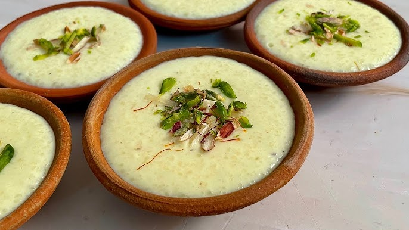
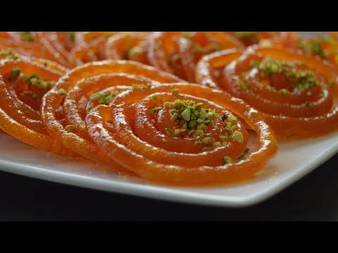

|
 FerniAfghani milk custard dessert with cardamom and nuts. |
 JelabiSweet deep-fried spirals soaked in sugar syrup. |
 KheerRice pudding made with milk, sugar, and dry fruits. |
| Home Add Recipe |
|
 FerniAfghani milk custard dessert with cardamom and nuts. |
 JelabiSweet deep-fried spirals soaked in sugar syrup. |
KheerRice pudding made with milk, sugar, and dry fruits. |
| © 2025 Created by [Fakhrunnisa Mohammadi] |